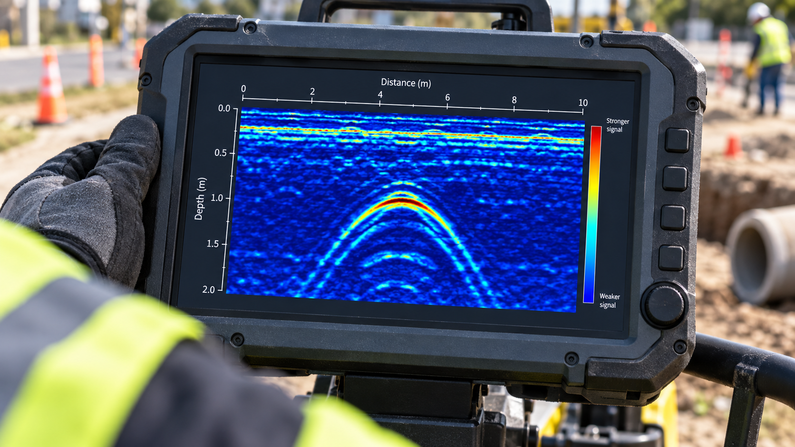

01
Captare inteligentă
Monitorizare în timp real a nivelului, debitului și calității sursei — înainte ca o variație să devină o problemă.
Află mai mult →SISTEME DE AUTOMATIZARE HIDRICĂ
Proiectăm sisteme inteligente care fac infrastructura apei mai sigură, eficientă și ușor de urmărit.

CE FACEM
Integram hardware robust, software intuitiv și expertiză inginerească într-un singur ecosistem.
Monitorizare în timp real a nivelului, debitului și calității sursei — înainte ca o variație să devină o problemă.
Află mai mult →
STAȚII DE POMPARE
Vizibilitate completă în rețea, de oriunde.
Află mai mult →
IMPACT MĂSURABIL
Nu vindem doar echipamente. Construim continuitate: pentru operatori, comunități și resursa care ne unește.
PROIECTE RECENTE

APĂ POTABILĂ · BRAȘOV
PROIECT SPECIAL
Localizăm branșamentele și traseele subterane fără săpătură, pentru intervenții sigure și eficiente.


01 · Scanare rapidă a rețelelor existente.
02 · Interpretarea ecourilor și marcarea traseelor.
03 · Plan de intervenție bazat pe date din teren.
DETECȚIA PIERDERILOR DE APĂ
O pierdere subterană poate exista înainte ca apa să ajungă la suprafață. Monitorizarea zgomotului, corelarea și verificarea acustică în teren ajută la restrângerea zonei de căutare și la orientarea intervenției.
LOGGERI DE ZGOMOT · PLATFORME ONLINE · AI
Folosim software cu inteligență artificială în platforme online pentru managementul loggerilor de zgomot. Înregistrările colectate din rețea sunt analizate pentru identificarea semnalelor suspecte și urmărirea evoluției lor în timp, astfel încât echipele să poată prioritiza zonele care necesită investigații.
Centralizarea datelor oferă o imagine de ansamblu asupra punctelor monitorizate și sprijină planificarea verificărilor. Indicațiile AI sunt evaluate de specialiști și corelate cu informațiile despre conducte și condițiile din teren; confirmarea unei pierderi se face prin măsurători și localizare la fața locului.
01 · Identificarea zonei
Datele de debit, presiune și zgomot ajută la selectarea tronsoanelor care necesită investigații.
02 · Localizarea în teren
Corelarea restrânge căutarea, iar ascultarea cu microfonul de sol ajută la verificarea punctului suspect.
03 · Verificarea rezultatului
După reparație, repetarea măsurătorilor permite evaluarea zgomotului rezidual și a evoluției debitelor.
Alegerea metodei depinde de materialul și diametrul conductei, presiune, acces și zgomotul ambiental. Datele corecte despre rețea și verificarea în teren sunt esențiale pentru interpretarea rezultatelor.
Discută despre detecția pierderilor →Fotografii și informații despre echipamente: SebaKMT® / Megger Germany GmbH. Echipamentele sunt prezentate ca exemple de tehnologie pentru detecția pierderilor.
SĂ ÎNCEPEM
Str. Ștefan cel Mare, nr. 104, Municipiul Vaslui · Tel. 0770 344 004